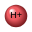
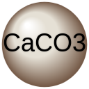
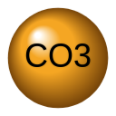
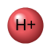

H2O - Água
Al3+ - Alumínio
CaCO3 - Calcário
Ca2+ - Cálcio
CO32- - Carbonato
CO2 - Dióxido de Carbono

H+ - Hidrogênio
Al(OH)3 - Hidróxido de Alumínio
Na agricultura, a calagem é utilizada para preparar o solo
para o cultivo agrícola, consistindo na aplicação do calcário
para elevar cálcio e/ou magnésio, corrigir o pH acídico do solo
e neutralizar o alumínio trivalente (decorrente da acidez).
São utilizados diferentes tipos de calcário com base nos requerimentos
do solo, alguns exemplos são:
No caso da simulação, é representado o Calcário Calcítico (CaCO3).
O calcário é dissolvido em cálcio e carbonato, como demonstrado
na fórmula abaixo, sendo esse processo favorecido pela acidez do solo,
pois os íons H+ reagem com o carbonato:

⇌ +
2-
A reação do carbonato com os íons H+ é de neutralização
dos íons que contribuem para a acidez do solo, liberando dióxido de
carbono e água. Conforme os íons H+ são neutralizados em
pares pelo carbonato, o pH tende a crescer em direção à um nível
adequado para as plantas, no caso da simulação, este pH é 7.

⟶ +
A representação acima é uma simplificação para a simulação,
de forma extensa, o que ocorre é que os íons de carbonato reagem
com a água presente no solo, formando bicarbonato (HCO3-) e
íons hidróxido (OH-) em um processo chamado hidrólise.
Os íons hidróxido reagem com os íons H+ responsáveis pela acidez
do solo, produzindo água. O bicarbonato também participa do processo, reagindo
com H+ e formando água e dióxido de carbono. Com as duas reações,
a concentração de H+ diminui, aumentando o pH do solo.
Os íons hidróxido são especialmente importantes para outro processo que reduz
a acidez e nocividade do solo para as plantas:
Com o crescimento do pH devido à neutralização dos íons H+,
o comportamento do alumínio, que também é nocivo para as plantas e surge
decorrente da acidez do solo, é afetado. Em condições de pH elevado,
os íons Al3+ tendem a reagir com os íons hidróxido OH-,
formando hidróxido de alumínio Al(OH)3, composto pouco solúvel
que reduz a concentração de alumínio tóxico no solo. O mesmo composto é uma
das formas do alumínio que naturalmente se encontram no solo.
A acidez do solo é determinada por outros fatores não representados pela simulação, como os coloides minerais e a matéria orgânicas. Esses fatores não foram abordados pois o intúito é demonstrar o processo principal da calagem, que é a neutralização da acidez e toxicidade do solo.